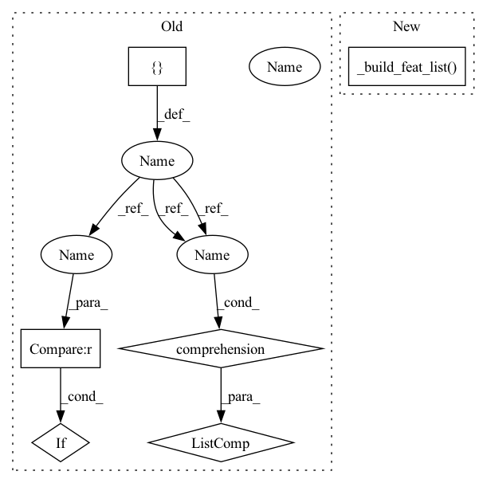

Pattern ID :20775
Before Change
self._check_field("source_field", "target_field")
self.inter_feat, self.user_feat, self.item_feat = self._load_data(self.dataset_name, self.dataset_path)
self.feat_list = [feat for feat in [self.inter_feat, self.user_feat, self.item_feat, self.net_feat] if feat is not None]
self._filter_by_inter_num()
self._filter_by_field_value()
self._reset_index()After Change
self.inter_feat, self.user_feat, self.item_feat = self._load_data(self.dataset_name, self.dataset_path)
self.net_feat = self._load_net(self.dataset_name, self.dataset_path)
self.feat_list = self._build_feat_list()
self._filter_by_inter_num()
self._filter_by_field_value()
self._reset_index()In pattern: SUPERPATTERN
Frequency: 4
Non-data size: 6
Instances Fragment ID: 66944761
Project Name: rucaibox/recbole
Commit Name: a70337aa12646228c7f41f16a26012ce0f9d12f7
Time: 2020-09-08
Author: houyupeng@ruc.edu.cn
File Name: recbox/data/dataset/social_dataset.py
M Class Name: SocialDataset
N Class Name: SocialDataset
M Method Name: _from_scratch(2)
N Method Name: _from_scratch(2)
M Parent Class: Dataset
N Parent Class: Dataset
M File Name: recbox/data/dataset/social_dataset.py
N File Name: recbox/data/dataset/social_dataset.py
M Start Line: 46
M End Line: 52
N Start Line: 32
N End Line: 71
Before Change
self._check_field("head_entity_field", "tail_entity_field", "relation_field", "entity_field")
self.inter_feat, self.user_feat, self.item_feat = self._load_data(self.dataset_name, self.dataset_path)
self.feat_list = [feat for feat in [self.inter_feat, self.user_feat, self.item_feat] if feat is not None]
self.kg_feat = self._load_kg(self.dataset_name, self.dataset_path)
self.item2entity, self.entity2item = self._load_link(self.dataset_name, self.dataset_path)
After Change
self._check_field("head_entity_field", "tail_entity_field", "relation_field", "entity_field")
self.inter_feat, self.user_feat, self.item_feat = self._load_data(self.dataset_name, self.dataset_path)
self.feat_list = self._build_feat_list()
self.kg_feat = self._load_kg(self.dataset_name, self.dataset_path)
self.item2entity, self.entity2item = self._load_link(self.dataset_name, self.dataset_path)
Fragment ID: 66944760
Project Name: rucaibox/recbole
Commit Name: a70337aa12646228c7f41f16a26012ce0f9d12f7
Time: 2020-09-08
Author: houyupeng@ruc.edu.cn
File Name: recbox/data/dataset/kg_dataset.py
M Class Name: KnowledgeBasedDataset
N Class Name: KnowledgeBasedDataset
M Method Name: _from_scratch(2)
N Method Name: _from_scratch(2)
M Parent Class: Dataset
N Parent Class: Dataset
M File Name: recbox/data/dataset/kg_dataset.py
N File Name: recbox/data/dataset/kg_dataset.py
M Start Line: 45
M End Line: 45
N Start Line: 50
N End Line: 50
Before Change
self.net_feat = self._load_net(self.dataset_name, self.dataset_path)
def _build_feat_list(self):
return [feat for feat in [self.inter_feat, self.user_feat, self.item_feat, self.net_feat] if feat is not None]
def _load_net(self, dataset_name, dataset_path):
net_file_path = os.path.join(dataset_path, "{}.{}".format(dataset_name, "net"))
if os.path.isfile(net_file_path):After Change
self.net_feat = self._load_net(self.dataset_name, self.dataset_path)
def _build_feat_list(self):
feat_list = super()._build_feat_list()
if self.net_feat is not None:
feat_list.append(self.net_feat)
return feat_list
Fragment ID: 66944762
Project Name: rucaibox/recbole
Commit Name: bbf6c86d0f84c7ebb00cf0bd4625577246fade1e
Time: 2020-10-09
Author: houyupeng@ruc.edu.cn
File Name: recbox/data/dataset/social_dataset.py
M Class Name: SocialDataset
N Class Name: SocialDataset
M Method Name: _build_feat_list(1)
N Method Name: _build_feat_list(1)
M Parent Class: Dataset
N Parent Class: Dataset
M File Name: recbox/data/dataset/social_dataset.py
N File Name: recbox/data/dataset/social_dataset.py
M Start Line: 39
M End Line: 39
N Start Line: 39
N End Line: 42
Before Change
return "\n".join(info)
def _build_feat_list(self):
return [feat for feat in [self.inter_feat, self.user_feat, self.item_feat, self.kg_feat] if feat is not None]
def _restore_saved_dataset(self, saved_dataset):
raise NotImplementedError()
After Change
return "\n".join(info)
def _build_feat_list(self):
feat_list = super()._build_feat_list()
if self.kg_feat is not None:
feat_list.append(self.kg_feat)
return feat_list
Fragment ID: 66944759
Project Name: rucaibox/recbole
Commit Name: bbf6c86d0f84c7ebb00cf0bd4625577246fade1e
Time: 2020-10-09
Author: houyupeng@ruc.edu.cn
File Name: recbox/data/dataset/kg_dataset.py
M Class Name: KnowledgeBasedDataset
N Class Name: KnowledgeBasedDataset
M Method Name: _build_feat_list(1)
N Method Name: _build_feat_list(1)
M Parent Class: Dataset
N Parent Class: Dataset
M File Name: recbox/data/dataset/kg_dataset.py
N File Name: recbox/data/dataset/kg_dataset.py
M Start Line: 52
M End Line: 52
N Start Line: 52
N End Line: 55